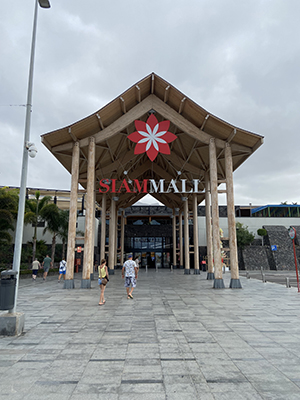
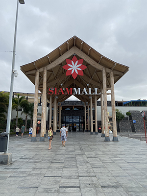

Costa Adeje, Tenerife
Hou je van warm weer, dan is tenerife ook wat voor jou.
 

Je kan er verschillende excursies doen, bijvoorbeeld naar vulkaan El teide gaan, dit is een all-in trip met diner en een drankje op de top van El teide. Zelf ben ik afgelopen zomer (2023) naar Tenerife gegaan. Door omstandigheden konden wij toen niet naar de vulkaan el Teide, maar ik heb van horen zeggen dat het echt een aanrader is om dat te doen. Ondanks dat waren er ook andere leuke dingen te doen. Je wordt daar doodgegooit met mensen die je daar willen helpen om een excursie te boeken, maar blijf daar op je hoeden. Twijfel je, boek het dan gewoon via de reisorganisatie waar je mee heen bent gegaan.
Op dit eiland zijn er veel dingen te beleven en kan je veel activiteiten doen ondanks dat het er warm is. Er zijn genoeg activiteiten waar je van kan afkoelen.